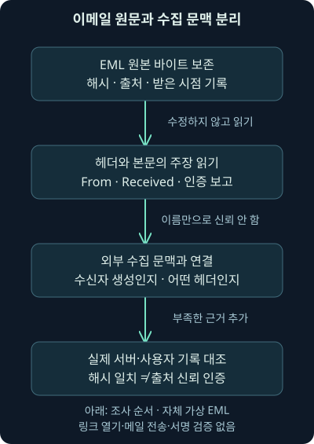
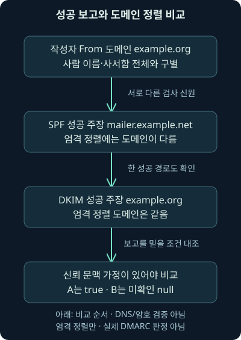
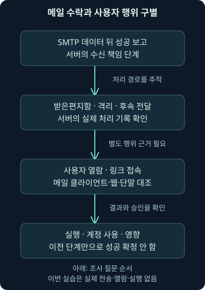

이메일 분석 종합 실습: 원문·전송·인증 근거
둘째 날 24강. 자체 이메일 원문과 가상 전송·수집 기록을 비교하며 발신 주장·수신 책임·인증 보고·사용자 행위를 구별합니다.
1. “인증 통과”라는 메일을 그대로 믿어도 될까요?
두 이메일에 spf=pass, dkim=pass라는 글자가 있습니다. 작성자 도메인도 같습니다. 그러면 둘 다 실제 인증을 통과했고 안전한 메일일까요? 먼저 그 결과를 누가 남겼는지, 지금 가진 원문이 어떤 경로로 수집됐는지 확인해야 합니다. 결과 문자열을 읽는 것과 인증을 수행하는 것은 다릅니다.
앞 강의에서는 흐름 기록이 파일·프로세스 근거를 대신하지 못한다는 점을 확인했습니다. 이번에는 같은 원칙을 이메일 원문, 전송 보고, 발신 신원, 인증 보고, 사용자 행동에 적용합니다. 작은 자체 파일을 실제로 읽고 조건을 바꾸어 해석하는 종합 실습입니다.
2. 본 교재와 원래 실습 안내, 자체 자료를 구별합니다
본 교재의 마지막 이메일 실습 안내는 별도 워크북·가상 위키를 참조하도록 되어 있습니다. 지정한 다섯 권과 관련 폴더·기존 기록을 확인했지만, 이번 작업에서 그 원래 워크북·위키·VM·실습 패킷을 별도로 확보해 수행한 것은 아닙니다. 모든 저장 위치에 없다는 뜻으로 확대하지 않습니다.
그래서 이 강의는 원래 문제의 정답이나 수행 완료를 재현하지 않습니다. 이메일 전달과 헤더·인증을 조사한다는 학습 목적을 새로 만든 가상 EML 두 개와 수집 문맥 JSON에 연결했습니다. EML은 헤더·본문이 담긴 이메일 원문 파일이고 JSON은 이름·값을 구조적으로 적은 텍스트 자료입니다. 둘 다 실제 사건 자료가 아닙니다.
3. 봉투·편지·접수 도장을 따로 보세요
우편 봉투의 반송 주소, 편지 안의 서명, 중간 우체국의 접수 도장은 역할이 다릅니다. 이메일도 SMTP 전송에서 쓰는 봉투와 메시지 안의 From·To·본문을 구별합니다. 중계 기록과 인증 결과 보고도 추가됩니다. 하나의 이름을 모든 역할의 진짜 사람으로 읽으면 조사 방향이 어긋납니다.
실제 이메일에서는 발신자가 일부 헤더를 직접 만들 수 있고 중계 서버가 기록을 더합니다. 따라서 종이에 찍힌 도장처럼 보인다는 이유로 누구의 기록인지 믿을 수는 없습니다. 출처·전달 경로·수신 정책을 대조해야 합니다. 비유는 역할 구분을 돕지만 헤더의 신뢰성을 보증하지 않습니다.
4. 파일을 읽기 전에 보존할 것은 무엇인가요?
message-a.eml, message-b.eml, context.json, 검사 프로그램, 설명 파일을 제공합니다. 파일 속 주소·사용자·조직·시각·본문 링크는 모두 자체 예시입니다. 링크를 열거나 메일을 전송하지 않습니다.
원문 바이트를 보존하고 사본으로 읽으세요. 해시는 바이트 내용에서 계산하는 요약 값이며, 이 실습은 SHA-256으로 각 EML과 그 문맥 항목을 연결합니다. 줄바꿈을 바꾸는 편집도 해시를 바꿀 수 있습니다. 두 EML은 CRLF 줄바꿈을 사용하는 서로 다른 파일입니다. CR은 복귀, LF는 줄바꿈을 나타내는 제어 문자이며 여기서는 두 바이트의 순서입니다.
해시가 같다는 것은 그 비교 대상 바이트가 같다는 근거입니다. 그 파일이 수신자에게서 왔고 내용이 진실이라는 인증은 아닙니다. 파일 자체의 보존과 출처의 신뢰성을 다른 질문으로 남깁니다.

5. 먼저 눈에 보이는 From과 전송 신원을 나눕니다
A의 From은 교육용 도움 담당자, B의 From은 교육용 임원 이름을 표시하지만 두 주소의 도메인은 모두 example.org입니다. 도메인은 @ 뒤의 이름입니다. 표시 사람 이름이나 사서함 앞부분까지 같아야 도메인이 같아지는 것은 아닙니다. 반대로 같은 도메인이라고 같은 실제 사용자인 것도 아닙니다.
두 파일의 Return-Path와 선택한 SPF 보고는 bounce@mailer.example.net이라는 다른 봉투 신원을 가리킵니다. Return-Path 헤더를 원래 사람이 직접 작성한 주소의 인증으로 보지 않습니다. 실제 봉투는 당시 SMTP·수신 기록과 대조해야 합니다. From·To·Date 같은 메시지 필드의 역할은 2026-11-07 RFC5322에서 확인했습니다.
To는 메시지에 적힌 수신자입니다. SMTP의 RCPT TO와 항상 같은 전체 수신자 목록이라고 가정하지 마세요. 숨은 수신·별칭·전달 경로 등이 있을 수 있습니다. 이번 검사기는 실제 SMTP 수신자 목록을 확보한 결과가 아닙니다.
6. Received는 순서와 신뢰 경계를 함께 읽습니다
두 원문의 위쪽 Received는 보관 서버가09:00:04 UTC에 받았다는 주장이고, 아래쪽은 경계 서버가20:00:00 +1100에 받았다는 주장입니다. +1100은 UTC보다11시간 빠른 시간대이므로 아래쪽 시각은09:00:00 UTC입니다. 차이는4초입니다. 중계를 거치며 새 Received가 위에 추가되는 구조를 따라 아래에서 위로 시간 후보를 읽습니다.
여기서4초는 헤더에 적힌 시각 주장 차이입니다. 실제 장비 시각·큐 지연을 검증한 측정값은 아닙니다. 아래쪽으로 내려가며 수신자가 신뢰하지 않는 영역에서 작성된 줄이 섞일 수도 있습니다. 가장 오래된 줄을 진짜 최초 발신 단말로 무조건 받아들이지 않습니다.
Message-ID도 여러 자료를 연결하는 후보이지 사람이 누구인지 증명하는 비밀 번호가 아닙니다. Date 역시 작성 측 주장입니다. 실제 조사에서는 수신 서버 큐 식별자·원문·수집 경로·시각 보정을 함께 확인합니다. 이 실습은 신뢰할 수 있는 실제 서버 로그를 보유한 상태가 아닙니다.
7. Authentication-Results는 검사를 보고하는 헤더입니다
Authentication-Results는 인증을 수행한 쪽의 결과를 메시지에 보고하는 필드입니다. authserv-id는 그 보고자를 나타내는 식별 이름입니다. 우리 파일의 선택한 값은 mx.receiver.example입니다. 하지만 이름이 맞다는 사실만으로 실제 그 서버가 작성했다는 인증이 되는 것은 아닙니다.
2026-11-07 RFC8601의 신뢰 경계와 처리 범위를 대조했습니다. 결과를 신뢰하려면 보고자와 소비자, 전달 경로 사이의 신뢰 관계가 필요합니다. 외부에서 비슷한 헤더를 넣을 수 있으므로 수신 정책과 수집 자료를 대조해야 합니다. 이 헤더는 결과 보고이지 소비자가 암호 검증을 새로 수행했다는 증거가 아닙니다.
각 원문에는 보고 헤더가 두 개 있습니다. 첫 번째의 식별자는 mx.receiver.example, 두 번째는 outside.example.net입니다. 둘 다 pass라고 적혀 있지만 계산기는 외부 문맥에 지정된 헤더 인덱스만 읽습니다. 인덱스는 목록에서 위치를 가리키며 여기서는0이 첫 번째입니다. “첫 번째면 언제나 신뢰”라는 규칙을 구현한 것이 아닙니다.
8. SPF의 pass는 어느 도메인의 성공 보고인가요?
선택한 보고에는 spf=pass smtp.mailfrom=bounce@mailer.example.net이라고 적혀 있습니다. SPF는 연결한 송신 주소가 관련 도메인의 발신 정책에 맞는지 평가하는 체계이며, 여기서는 봉투 발신 신원에 대한 성공 주장입니다. 화면의 From example.org을 직접 인증했다는 뜻이 아닙니다. 2026-11-07 RFC7208의 검사 신원을 확인했습니다.
이번에 SPF를 실제 실행하지 않았습니다. 당시 송신 IP·DNS 정책·조회 결과가 없고, 프로그램은 헤더 문자열을 읽기만 합니다. 전달·중계·일시적 조회 오류 같은 실제 처리 조건도 재현하지 않습니다. 입력이 pass라고 쓰였다는 사실과 실제 정책 통과를 구별하세요.
9. DKIM의 pass도 실제 서명 검증과 구별합니다
다음에는 dkim=pass header.d=example.org이 있습니다. DKIM은 메시지의 서명 도메인이 책임을 주장하는 암호학적 서명 체계입니다. 서명자와 표시 작성자의 신원은 다를 수 있습니다. 기본 역할은 2026-11-07 RFC6376에서 대조했습니다.
우리 자료는 학습용으로 작성한 결과 보고입니다. 실제 유효한 DKIM 서명·공개키 검증 자료를 제공해 검증을 통과시킨 메일이 아닙니다. 검사기는 서명 본문·정규화·키 조회·암호 계산을 수행하지 않습니다. 따라서 출력에서도 actual_dkim_signature_verified는 거짓입니다. “보고된 성공을 읽었다”라고 표현해야 정확합니다.
실제 사건에서는 원문 바이트 변경·서명한 필드·본문 범위·사용 키·정책·중계 수정 등을 확인해야 합니다. 서명이 유효해도 특정 사람이 직접 보냈거나 본문이 업무상 안전하다는 뜻은 아닙니다. 정상 계정·서비스의 오용과 내용 위험은 별도 질문입니다.
10. 엄격 정렬이라는 작은 조건부터 적용합니다
DMARC에서 정렬, alignment은 From의 작성자 도메인과 성공한 SPF 또는 DKIM의 관련 도메인이 정책에 맞게 연결되는지 보는 개념입니다. 이 실습은 이해하기 쉬운 엄격 정렬, 도메인 이름의 정확한 일치만 계산합니다. 실제 DNS 정책에서 엄격 모드를 확인했다는 뜻이나 모든 배포의 기본값이라는 뜻은 아닙니다.
가상 조건에서는 From example.org과 SPF 도메인 mailer.example.net이 다릅니다. SPF 성공 보고만으로 엄격 정렬 경로가 생기지 않습니다. DKIM 성공 보고의 example.org은 같으므로, 그 보고를 사용할 신뢰 문맥 가정이 있다면 한 경로가 조건에 맞습니다.

2026-11-07 확인한 RFC9989는2026년5월 DMARC 규격으로RFC7489·9091을 대체합니다. 정렬된 성공 경로는 SPF 또는 DKIM입니다. 완화 정렬의 조직 도메인 탐색, 정책 발견·실제 수신 조치는 이 작은 검사기의 범위 밖입니다. 보고 명세도 RFC9990·RFC9991로 구별하며, 이번에는 보고를 생성·전송하지 않았습니다.
11. 같은 pass인데 A는 true, B는 null입니다
context.json에는 A의 선택한 보고를 수신자가 남겼다는 가상 조건을 참으로, B는 미확인이라 거짓으로 넣었습니다. 파일 해시는 그 조건을 어느 바이트 자료에 연결하는지 구별합니다. 조건 자체가 실제 수신자의 서명·증명서는 아닙니다.
그래서 A는 제공한 보고·문맥 가정 아래 엄격 정렬 비교가 true입니다. B는 보고자의 이름과 pass 문자열이 같아도 신뢰 문맥이 확인됐다고 가정하지 않아 null로 남습니다. null은 여기서 판단할 조건이 부족하다는 뜻입니다. 인증 실패가 확인된 false와 다릅니다.
| 실제 로컬 결과 | A | B |
|---|---|---|
| 작성자 도메인 | example.org | example.org |
| 선택한 보고자 이름 | mx.receiver.example | mx.receiver.example |
| 보고된 SPF/DKIM | pass/pass | pass/pass |
| 수신자 생성 문맥 가정 | 참 | 거짓 |
| 보고·가정에 따른 엄격 정렬 비교 | true | null |
| Received 시각 주장 차이 | 4초 | 4초 |
| 실제 DNS·서명·수신자 출처 검증 | 수행 안 함 | 수행 안 함 |
두 파일 모두 안전·악성 정답으로 분류하지 않았습니다. 실제 수신자 출처·서명·전송·받은편지함·사용자 행동 검증은 전부 거짓으로 남습니다. 표의 true 하나를 그 모든 질문의 답으로 복사하지 마세요.
12. 실제 실행 명령의 인수를 읽어봅시다
같은 폴더에서 다음 두 검사를 작성 환경의 Python3.12.14 표준 라이브러리로 실제 실행했습니다. Python은 로컬 프로그램 실행 환경입니다.
python inspect_email.py message-a.eml context.json
python inspect_email.py message-b.eml context.jsoninspect_email.py 뒤 첫 인수는 읽을 원문 경로, 두 번째는 수집 문맥 가정의 경로입니다. 파일 이름이 바뀌면 JSON에서 연결할 항목도 맞아야 합니다. 원문 해시가 다르면 검사기는 오류로 중단합니다. 임의의 다른 메일에 가상 A의 문맥을 자동 적용하지 않으려는 조건입니다.
검사기는 From 한 개의 한 메일함, 고정된 단일 SPF·DKIM 보고 형식, Received 두 줄의 시간만 지원합니다. 지원하는 결과 이름도 pass·fail·none으로 제한하므로 실제 SPF의 모든 상태를 입력하면 안 됩니다. 일반 Authentication-Results 문법·다중 서명·완화 정렬·DNS 탐색·SMTP 상태 기계·모든 MIME 구조를 구현하지 않습니다. MIME은 본문·첨부의 유형과 구조를 표현하는 체계입니다. 이번 텍스트 메일에서 첨부0개라는 결과를 모든 실제 메일의 완전한 위험 검사라고 말하지 않습니다.
13. 조건을 바꾸어 결과의 경계를 확인합니다
A의 DKIM 성공 주장을 fail로 바꾸고 원문·문맥 해시를 함께 갱신한 가상 변형을 생각해보세요. SPF는 성공이라고 쓰였지만 도메인이 다르고, 정렬된 DKIM 성공도 없어 엄격 조건 비교는 false가 됩니다. 이것은 가상 보고 조건의 계산이지 실제 암호 검증 실패 결과가 아닙니다.
반대로 SPF 보고의 도메인을 example.org으로 바꾸고 DKIM 성공 주장이 없어도, 신뢰 문맥 가정이 있다면 SPF 한 경로로 조건을 만족할 수 있습니다. 두 성공이 모두 필요하다는 오해를 점검하는 예입니다. 이 조건 변경들은 별도 사본으로 검사하며 원래 다운로드 자료를 바꾸지 않았습니다.
문맥만 참으로 바꾸면 B도 계산 결과가 달라질 수 있습니다. 하지만 실제 수집 근거가 생긴 것은 아닙니다. 입력 조건의 변화와 외부 증거의 확보는 다릅니다. 정렬 결과를 실제 검증으로 부풀리지 않으려고 모든 실제 검증 값을 따로 유지합니다.
14. SMTP 수락은 받은편지함·읽기·실행이 아닙니다
문맥 파일의 smtp_data_accepted_claim은 SMTP 데이터 뒤 성공 보고가 있었다는 별도의 가상 주장입니다. 실제 SMTP 대화나 PCAP를 읽어 확인한 값이 아닙니다. SMTP의 데이터 전송 뒤 성공 응답은 서버가 전달·중계 책임을 받는 단계이며, 받은편지함 표시·사용자 열람·링크 접속·첨부 실행은 더 확인해야 합니다. 기본 책임 관계는 2026-11-07 RFC5321에서 확인했습니다.

실제 자료가 있다면 큐 식별자로 수신·격리·배달·반송을 연결하고, 사용자 행동은 메일 클라이언트·웹 요청·단말·계정 기록과 맞춥니다. 헤더 Date나 Message-ID 하나를 서버 로그의 인과 증명으로 취급하지 않습니다. 장비 시각·이름·식별자 재사용·수집 보존도 확인해야 합니다.
15. 패킷 검색도 질문에 맞춰 제한합니다
다음은 미실행 Wireshark 표시 필터 예시입니다. 실제 SMTP PCAP·Wireshark 실행 결과를 제공하는 것은 아닙니다.
smtp
smtp.response.code == 250첫 줄은 SMTP로 해석된 대화, 두 번째는 응답 코드250을 찾습니다. ==는 같은 값이라는 조건입니다. 250은 여러 명령 뒤에 올 수 있으므로 결과 행 하나만 보고 “메시지 데이터 수락”이라고 단정하지 않습니다. 어느 요청·단계의 응답인지 확인해야 합니다. 표시 필터는 수집 필터와도 다릅니다.
2026-11-07 공식 SMTP 필드 참조에서 해당 코드 필드의 제공 범위1.0.0–4.6.9를 확인했습니다. 문서 범위는 이 기기의 실제 시험 버전이 아닙니다. STARTTLS 이후 내용·비표준 포트 해석·양방향 수집·재조립·잘린 길이에 따라 보이지 않을 수 있으므로 음성 결과에는 그 한계를 함께 적습니다.
16. 최종 조사 메모를 세 문장으로 써봅니다
“자체 A·B 원문에서 From과 두 인증 보고, Received 시각 주장을 읽었고 선택한 보고의 SPF·DKIM 도메인을 분리했다.” 이것이 직접 수행한 로컬 해석입니다. “A는 수신자 생성 문맥 가정 아래 엄격 정렬 비교가 true, B는 그 가정이 없어 null이었다.” 이것이 조건 계산입니다. “실제 DNS·서명·수집 출처·전송·사용자 행동·침해 성공은 검증하지 않았다.” 이것이 남은 한계입니다.
실제 사건에서는 마지막 문장의 항목을 채울 자료를 요청하고 검증합니다. 인증 결과가 pass여도 내용 사기·유사 도메인·정상 계정 오용·승인되지 않은 요청은 남을 수 있습니다. 반대로 인증 실패나 미확인 하나가 실제 피싱 성공·단말 감염을 증명하지 않습니다.
둘째 날은 이 독립 실습으로 마무리합니다. 개념 범위 대응과 원본 워크북 수행 여부는 구별해 기록했습니다. 다음 셋째 날1강부터는 네트워크에서 남은 질문을 단말의 프로세스·로그·파일로 연결합니다.
17. 복습: 보고·비교·실제 검증을 구별해보세요
질문 1. 이 파일은 원래 워크북의 실습 메일인가요?
해설: 새로 만든 자체 가상 자료입니다. 원래 별도 워크북·위키·VM의 수행 완료를 뜻하지 않습니다.
질문 2. 해시가 같으면 수신자가 만든 진짜 헤더인가요?
해설: 바이트 비교가 같다는 뜻입니다. 출처와 작성 권위는 별도 증거가 필요합니다.
질문 3. From과 SMTP 봉투 발신자는 같은 역할인가요?
해설: 표시 작성자와 전송 신원은 다릅니다. 이번 SPF 보고의 봉투 도메인도 From과 다릅니다.
질문 4. Received의20:00 +1100과09:00 UTC는 얼마나 다른가요?
해설: 같은 시각입니다. 시간대를 맞춘 뒤 위쪽09:00:04와 비교하면 주장 차이는4초입니다.
질문 5. 그4초는 실제 측정한 메일 지연인가요?
해설: 헤더 시각 주장의 계산입니다. 실제 장비 시각과 서버 큐를 검증하지 않았습니다.
질문 6. authserv-id가 기대한 서버 이름이면 바로 신뢰하나요?
해설: B처럼 이름만 맞고 수집 문맥이 미확인일 수 있습니다. 이름 자체가 보고자의 인증은 아닙니다.
질문 7. A의 SPF가pass면 From도 엄격 정렬됐나요?
해설: 보고된 봉투 도메인mailer.example.net과 From example.org이 달라 그 경로는 맞지 않습니다.
질문 8. 그럼 A는 왜 조건 비교가true인가요?
해설: 제공한 문맥 가정 아래 DKIM 성공 보고의 도메인이 From과 같기 때문입니다. 실제 서명 검증은 아닙니다.
질문 9. DKIM이fail이어도 정렬된 SPF 성공 보고가 있으면요?
해설: 이 가상 엄격 조건에서는 한 성공 경로로 만족할 수 있습니다. 신뢰 문맥 가정도 있어야 비교합니다.
질문 10. B의null은 실제 DMARC 실패인가요?
해설: 보고를 사용할 조건이 부족하다는 자체 도구의 미확인 값입니다. 실제 DMARC 평가를 실행하지 않았습니다.
질문 11. 엄격 정렬 계산은 모든 DMARC 기본 동작인가요?
해설: 이해를 위한 제한 조건입니다. 실제 정책·완화 정렬·도메인 탐색·수신 조치는 별도로 확인해야 합니다.
질문 12. 250 응답 하나면 사용자가 읽은 메일인가요?
해설: 어느 명령 뒤의 응답인지부터 확인합니다. 데이터 뒤 수락이라도 사용자 열람·행동은 별도입니다.
질문 13. 첨부0개면 내용도 안전한가요?
해설: 첨부 개수와 내용·링크·요청의 위험은 다른 질문입니다. 실제 사용자 행동·내용 조사도 이번 범위 밖입니다.
질문 14. 원문을 편집하고 같은 문맥으로 검사하면 왜 중단하나요?
해설: 해시가 달라져 파일과 문맥의 연결 조건이 깨집니다. 도구의 입력 오류이지 실제 서버 인증 실패가 아닙니다.